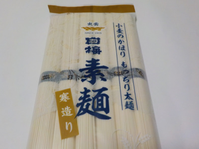

いいものを探そう ～出雲らへん～
島根県出雲市今市町1181番地2
2022/08/06
児玉製麺 白梅 寒造りそうめんは太麺です。

そうめんは細麺のイメージがありますが、この商品は太麺です。
太いのでもっちりしててコシがあります。そのぶんツユがからまないので、あっさり味のそうめんになりました。
薬味を多くするとか、ツユを濃くするとか色々アレンジして食べると面白いかなと思います。
焼きナス、キュウリ、トマト等の夏野菜を入れたものを作ろうと思いました。
【児玉製麺TOP】
【地域TOP】
【HPTOP】
【『今市町らへん』の他の情報はこちら】
【おいしいものを食べよう。】【たくさん寝よう。】
【ソロ活をしよう!】【季節感のあることをしよう。】【動画視聴はほどほどに。】【当サイトの全てのコンテンツは無断転載禁止です。】